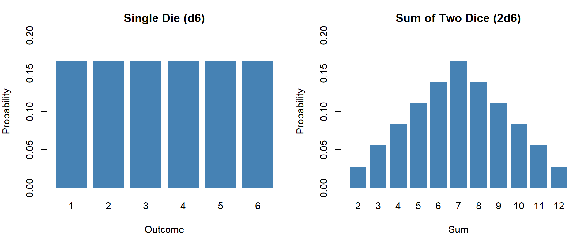
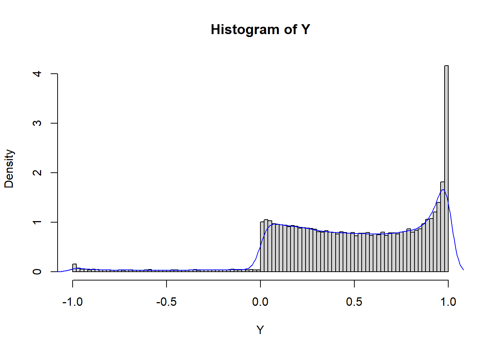

Probability and Set Theory
“Probability is the most important concept in modern science, especially as nobody has the slightest notion what it means.” — Bertrand Russell
Probability assigns values to events in a sample space. Starting with set theory we can define probability using Kolomogorov’s axioms on a collection of measurable subsets called a sigma algebra, denoted by \(\mathcal F\). This collection contains \(\Omega\) and is closed under complements and countable unions. Probability is defined on the events in \(\mathcal F\).
The triple \((\Omega,\mathcal F,\mathbb P)\) is called a probability space. We use \(Prob(A)\) and \(\mathbb P(A)\) interchangeably below, (though \(Prob(\cdot)\) is often reserved for the pushforward-measure, which is expalined in more detail in the measure-theoretic probability section)
The finer details of this framework belong to measure-theoretic probability. For many introductory applications, we work primarily with the following consequences, (which can be proven using them)
Kolmogorov Axiom Consequences: Properties of Probability
Complement rule: \[ Prob(A^c)=1-Prob(A). \]
Empty event: \[ Prob(\emptyset)=0. \]
Addition rule: \[ Prob(A\cup B) = Prob(A)+Prob(B)-Prob(A\cap B). \]
Monotonicity: If \(A_1\subseteq A_2\), then \[ Prob(A_1)\leq Prob(A_2). \]
Countable subadditivity (union bound): For any sequence of events \(A_1,A_2,\ldots\), \[ Prob\left(\bigcup_{n=1}^{\infty}A_n\right) \leq \sum_{n=1}^{\infty}Prob(A_n). \]
Below, we introduce key ideas in probability theory, leaving detailed treatments of particular distributions to other references and practical applications (though I can not stress enough how important becoming confrtable with different distributions is to a thorough understanding of probability theory). We introduce both standard frequentist and Bayesian viewpoints and emphasize both satisfy Kolmogorov’s axioms, but differ in how probability is interpreted and used for inference
Frequentist Probability
Frequentist statistics defines probability as long run frequency,
For a finite sample space \(\Omega\) in which every elementary outcome is equally likely, the probability of an event \(A\subseteq\Omega\) is simply \(Prob(A)=\frac{|A|}{|\Omega|}\). These are very strong assumptions but the more general \(\frac{n(A)}{n}\) connects our earlier combinatorics discussion to probability: counting the number of favorable outcomes and dividing by the number of possible outcomes gives the probability of an event. The assumption that all elementary outcomes are equally likely is essential.
It is often easier to count outcomes in which an event does not occur and subtract their probability from one. The birthday problem illustrates this idea,
Conditional Probability
“Conditioning is the soul of statistics, every probability is conditional… Everything is conditional” — Joseph Blitzstein
What about when we care about a specific subset of random variables or have some type of prior information we want to incorporate into the probability? In that case we need a notion of probability that is dependent upon or conditional with respect to specific events,

Conditional Probability is for most purposes simply a more granular probability, its covering your eyes and pretending what you are conditioning on \(B\) is the new \(\Omega\) in a sense

Remark
Think of conditioning on an event \(B\) as “zooming in” on the piece of your probability space that lives inside \(B\).
The relevant probability depends on what we condition on. A small population-wide probability does not necessarily imply a small probability within a subgroup facing substantially greater exposure.

rv vs set conditioning
conditioing is not an operation on an rv it is a set and set function operation so for example in consitsnecy we wouldnt write \(Y(a)=Y|A=a\) we woudll write \(A=a\implies Y=Y(a)\) or \(Y=Y(A)\)
This allows us to find conditional probabilities via contingency tables,
Conditional PDF are defined similarly to conditional probabilities via dividing joint and marginal PDF, and going back to \(Prob\) vs \(\mathbb{P}\) we see there is really no difference and we define,
Example: COnditional Probability
Let \((X,Y)\) have joint density \[ f_{X,Y}(x,y) =\begin{cases} 2, & 0 \le x \le y \le 1,\\ 0, & \text{otherwise}. \end{cases} \] First compute the marginal of \(Y\): \[ f_Y(y) =\int_{-\infty}^{\infty} f_{X,Y}(x,y)\,dx =\int_{0}^{y} 2\,dx =2y, \quad 0\le y\le1. \] Since \(f_Y(y)>0\) on \([0,1]\), the conditional density of \(X\) given \(Y=y\) is \[ f_{X\mid Y}(x\mid y) =\frac{f_{X,Y}(x,y)}{f_Y(y)} =\frac{2}{2y} =\frac{1}{y}, \quad 0\le x\le y. \] One checks \(\int_{-\infty}^{\infty} f_{X\mid Y}(x\mid y)\,dx =\int_{0}^{y}\frac{1}{y}\,dx =1\), as required

Laws of Total Probability, Expectation and Variation
Conditioning also helps establish the law of total probability,
Theorem: Law of Total Probability
Let \(\{A_1, A_2, \dots, A_n\}\) be a partition of the sample space (so \(Prob(A_i)>0\) for all \(i\) and \(\sum_{i=1}^nProb(A_i)=1\)), and let \(B\) be any event with \(Prob(B)>0\) then \[ Prob(B) =\sum_{i=1}^n Prob(B\mid A_i)\,Prob(A_i) = \sum_{i=1}^n \,Prob(A_i\cap B) \]
Again this law can be written in terms of PDF and more generally \(\mathbb{P}\) as well.
Generalizing the law of total probability leads to the law of total expectation: we can compute an overall expectation by first computing conditional expectations and then averaging them over the distribution of the conditioning variable.
Theorem: Law of Total Expectation
Let \(X\) and \(Y\) be random variables with \(E[|Y|]<\infty\). Then \[ E[Y]=E\bigl[E[Y\mid X]\bigr]. \]
If \(X\) is discrete, \[ E[Y] = \sum_{x:\,Prob(X=x)>0} E[Y\mid X=x]\,Prob(X=x). \]
If \(X\) has a density \(f_X\), \[ E[Y] = \int_{-\infty}^{\infty} E[Y\mid X=x]\,f_X(x)\,dx. \]
Here \(E[Y\mid X]\) is itself a random variable: its value depends on \(X\). The outer expectation averages these conditional means over the distribution of \(X\), recovering the unconditional mean of \(Y\).
The law of total probability is a special case: take \(Y=\mathbf{1}_B\), the indicator of an event \(B\). Since expectations of indicators are probabilities, \[ Prob(B) = E[\mathbf{1}_B] = E\bigl[E[\mathbf{1}_B\mid X]\bigr] = E\bigl[Prob(B\mid X)\bigr]. \]
This helps establish the law of total variation
\[Var(Y) = E(Var(Y|X)) + Var(E(Y|X))\]
Finally conditional probabilities are directional \(Prob(A|B) \neq Prob(B|A)\) but they are related via Baye’s Theorem
Theorem: Bayes’ Theorem
Let \(A\) and \(B\) be events with \(Prob(A)>0\) and \(Prob(B)>0\). Then \[ Prob(A\mid B) = \frac{Prob(B\mid A)\,Prob(A)}{Prob(B)}. \]
More generally, let \(\{A_1,A_2,\dots,A_n\}\) be a partition of the sample space, with \(Prob(A_i)>0\) for every \(i\), and let \(B\) be an event with \(Prob(B)>0\). Then, for each \(k=1,\dots,n\), \[ Prob(A_k\mid B) = \frac{Prob(B\mid A_k)\,Prob(A_k)} {\displaystyle\sum_{i=1}^n Prob(B\mid A_i)\,Prob(A_i)}. \]
The denominator is obtained from the law of total probability: \[ Prob(B) = \sum_{i=1}^n Prob(B\mid A_i)\,Prob(A_i). \]

Bayes’ theorem allows us to reverse the direction of conditioning. In general, \(P(A\mid B)\) and \(P(B\mid A)\) are not equal: observing evidence changes our probability assessment according to both its likelihood and the prior probability of the event.
Independence
If this factorization fails, then \(X\) and \(Y\) are . In practice, independence is sometimes assumed, other times it is assessed which amounts to verifying one of these equivalent factorization criteria.
Example: XKCD #1985, marginal probabilities alone do not determine joint probabilities

Suppose a weather forecast reports a 20% chance of rain during each of the next five hours. What is the probability that it rains at least once?
Let \(A_i\) denote the event that it rains during hour \(i\), with \(P(A_i)=0.2\) for \(i=1,\ldots,5\). We want to calculate
\[ P\left(\bigcup_{i=1}^5 A_i\right). \]
If the hourly events are mutually independent, the complement rule gives
\[ \begin{aligned} P\left(\bigcup_{i=1}^5 A_i\right) &=1-P\left(\bigcap_{i=1}^5 A_i^c\right)\\ &=1-\prod_{i=1}^5 P(A_i^c)\\ &=1-(0.8)^5\\ &\approx0.6723. \end{aligned} \]
However, if rain occurs during all five hours together or not at all, the probability is only \(0.2\). Alternatively, if the five events are mutually exclusive, the probability is \(5(0.2)=1\).
Thus, the same five marginal probabilities can yield dramatically different probabilities for their union, depending on the dependence structure.
Independence is an assumption about the joint distribution, not a consequence of knowing the marginal distributions.
Independence has nice effects on Mean and Cov
Effects of Independence on Expectation and Covariance
Let \(X\) and \(Y\) be independent random variables with finite second moments.
Then: - \(\displaystyle \mathbb{E}[X+Y] = \mathbb{E}[X] + \mathbb{E}[Y].\)
\(\displaystyle \mathbb{E}[XY] = \mathbb{E}[X]\,\mathbb{E}[Y].\)
\(\displaystyle Cov(X,Y) = \mathbb{E}[XY] - \mathbb{E}[X]\mathbb{E}[Y] = 0.\)
\(\displaystyle Var(X+Y) = Var(X) + Var(Y)\)
Having an independent set of possibilities is not the same thing as having a mutually exclusive set of possibilities, in fact being mutually exclusive implies dependence,
Mutually Exclusive Implies Dependence
Mutually exclusive events with positive probability are dependent
Independence and Conditional Probability
Another way of thinking of independence is that conditioning has no effect on the probabilities of events (or on distributions of random variables).
By bayes rule we know \(P(AB) = P(A|B)P(B)\) if \(P(A|B) = P(A)\) we arrive at our previous definition of independence, therefore the two definitions are independent.
Going through the same coin flip example,
Remark: Mutual Exclusivity and \(r\)-Wise Independence
A collection of events \(\{A_1,\ldots,A_n\}\), where \(A_i\subseteq\Omega\), is pairwise mutually exclusive if
\[ A_i\cap A_j=\emptyset \qquad\text{for all }i\neq j. \]
This is usually referred to simply as mutual exclusivity. More generally, we can define \(r\)-wise exclusivity by requiring that the intersection of every \(r\) distinct events is empty. Consequently,
\[ \boxed{ \text{Pairwise exclusivity} \implies \text{3-wise exclusivity} \implies \cdots \implies \text{$n$-wise exclusivity}. } \]
The reverse implications do not generally hold. For example, three events can have an empty three-way intersection while having nonempty pairwise intersections.
Statistical independence has the opposite hierarchy. A collection of events is called \(r\)-wise independent if every subcollection of at most \(r\) events is independent. In particular, pairwise independence requires
\[ P(A_i\cap A_j)=P(A_i)P(A_j) \qquad\text{for all }i\neq j, \]
whereas mutual independence requires, for every nonempty subset \(S\subseteq\{1,\ldots,n\}\),
\[ P\left(\bigcap_{i\in S}A_i\right) = \prod_{i\in S}P(A_i). \]
Thus,
\[ \boxed{ \text{$n$-wise independence} \implies \cdots \implies \text{3-wise independence} \implies \text{Pairwise independence}. } \]
Again, the reverse implications do not generally hold. Pairwise independence alone does not imply that three or more events are jointly independent.
Finally, mutual exclusivity and independence are distinct properties. If \(A\) and \(B\) are mutually exclusive and both have positive probability, then
\[ P(A\cap B)=0 \neq P(A)P(B)>0, \]
so they cannot be independent.
Random Variables
“Random variables are a lot like Guinea pigs, neither a pig, nor from Guinea” — A conversation I overheard as an undergrad
Random variables are actually measurable functions \(X:\Omega \to \mathbb{R}\) on the sample space. We use these functions to evaluate randomly selecte Random variables are the “mechanisms” assigning values to events and subsequently allowing us to assign probability to events, most genrally A random function is a probability distribution on a space of functions, i.e. a function-valued random variable. Very confusing!
When \(\Omega\) is small and obvious (say, the set of poker hands) it’s just as easy to reason on \(\Omega\) itself. But in more elaborate experiments, \(\Omega\) can be huge or hard to describe, so we summarize everything by the distribution of the random variable \(X\). The collection of possible values of \(X\) (together with their probabilities) then completely characterizes the underlying random process.
CDF \(F_X\) uniquely determine the map/law of \(X\) but they must satisfy the above properties to be a valid CDF, that is if two RV have the same valid CDF they are indistinguishable probabilistically even if they are describing the same situations!
Example
Suppose we have two piecewise functions, which is a CDF and which is not?

\[\begin{align*} F(x)&= \begin{cases} 0, & x<0,\\ a, & x=0,\\ a + (1-a)\,\dfrac{x}{2}, & 0<x<2,\\ 1, & x\ge2, \end{cases}\\ G(x)&= \begin{cases} 0, & x<0,\\ b, & x=0,\\ a + (1-a)\,\dfrac{x}{2}, & 0<x<2,\\ 1, & x\ge2, \end{cases} \end{align*}\]
We check the CDF axiom above systematically,
- Non decreasing: Both \(F\) and \(G\) are non-decreasing
- Right continuity: \(F\) is right continuous but \(G\) is not (at \(x=0\))
- Limits at \(\pm\infty\): \[\lim_{x\to-\infty}F(x)=0,\; \lim_{x\to+\infty}F(x)=1\] and similarly for \(G\)
Conclusion: \(F\) is a valid CDF, while \(G\) is not.
In statistical modeling, we specify a collection of candidate distributions \(\mathcal P\) and use observed data to infer which distribution, or which features of that distribution, best describe the data-generating process. Before exploring those applications, however, it is crucial to distinguish between discrete and continuous random variables, since the techniques and interpretations differ for each case.
Distributions of Random Variables
Important Distriubtions
bernoulli, binomial, poisson,, normal ,gamma
Adjust the number of trials and success probability to explore a binomial distribution.
What matters to a random variable is its probability distribution, not whether its realized values appear random or equally likely.
Example: XKCD #221 — Degenerate Distributions

Although the function in the comic always returns 4, it still defines a valid random variable, albeit one with a degenerate distribution. If \(X=4\) with probability one, its distribution is a Dirac point mass at 4, denoted by
\[ P_X=\delta_4, \]
where the Dirac measure is defined by
\[ \delta_4(A)= \begin{cases} 1, & 4\in A,\\ 0, & 4\notin A. \end{cases} \]
Equivalently, its PMF is \(p_X(x)=\mathbf{1}_{\{4\}}(x)\). We can also formally express its generalized density using the Dirac delta function,
\[ f_X(x)=\delta(x-4), \]
although this is not an ordinary density with respect to Lebesgue measure.
Thus, \(P(X=4)=1\), \(E[X]=4\), and \(Var(X)=0\). The function does not generate new random outcomes; it simply returns the same value every time.
Example: XKCD #1277 — Randomness and the Principle of Indifference

The comic satirizes Ayn Rand’s philosophical system of Objectivism, joking that a random number generator favoring certain numbers might be justified because those numbers are intrinsically better.
This illustrates a distinction between randomness and uniformity. A random variable need not assign equal probabilities to all possible outcomes. For example,
\[ p_X(x)= \begin{cases} 0.2, & x=1,\\ 0.3, & x=2,\\ 0.5, & x=3,\\ 0, & \text{otherwise} \end{cases} \]
defines a perfectly valid, albeit nonuniform, discrete distribution.
This connects to the philosophical principle of indifference, also known as the principle of insufficient reason. Roughly, the principle suggests assigning equal probabilities to alternatives when there is no reason to favor one over another. However, lack of information does not mathematically imply equal probabilities, and the choice of how to partition the outcomes matters.
For example, two independent fair six-sided dice produce 36 equally likely ordered outcomes, but only 11 possible sums. Assuming these sums are equally likely would incorrectly give
\[ P(X_1+X_2=7)=\frac{1}{11}, \]
whereas counting the underlying outcomes gives
\[ P(X_1+X_2=7)=\frac{6}{36}=\frac16. \]
Thus, uniformity must be justified by the probability model, rather than assumed merely because the outcome is random. A biased random number generator is not inherently invalid; it is problematic when it claims to sample from a different distribution.
The examples above illustrate that discrete random variables assign probability to individual outcomes, whether those probabilities are uniform, unequal, or concentrated entirely at a single point. However, many quantities of interest, such as time, height, or temperature, are naturally modeled as taking values along a continuum. This motivates continuous random variables, for which individual points have probability zero and probabilities are instead assigned to intervals or other measurable sets.
Example: Normal Random Variable
A random variable with distribution \(N(\mu,\sigma^2)\) is absolutely continuous with respect to Lebesgue measure and has support over all of \(\mathbb R\). Individual points have probability zero, while probabilities of intervals are obtained by integrating the normal density across the input axis (not the vertical output axis as the image below)

The PMF and PDF also have useful relationships with the CDF. For discrete random variables, the jumps of the CDF give the point masses. For absolutely continuous random variables, the CDF is obtained by integrating the density, while the density is the derivative of the CDF almost everywhere.
Moments
Random variables change from sample to sample and thus they have sampling distributions and we might be interested in the characteristics of these distributions.
Important subtley: SUBSCRIPTS IN EXPECTATIONS
notation is emant to amke thign seasier but sometimes it makes thing implcit and harder to understnad so we use the subscript to indicate the distributionwe are integrating across ex \(E_X\) or \(E_{P_0}\)
When dealing with test statistics and samples we use more specific language than “standard deviation” and instead call the standard deviation of the test statistic . Further, the population mean is not generally known so instead we must estimate \(\mu\) using \(\mathbb{E}(X)\) in the variance formula then we have the unbiased sample variance estimator as,
\[\boxed{S_n^2 = \frac{\sum_{i=1}^n (x-\overline{x}_n)^2}{n-1}}\] ::: {.callout-tip title=“Unbiasedness”}
everything is unbiased for something (its expecation) its jsut whterht that matters!
:::
Variance only describes a one-dimensional variation within a single random variable, sometimes random variables can vary together and the covariance captures this,
The mean and variance of a random variable \(\mathbb{E}(X), var(X)\) actually describe characteristics of the sampling distribution of \(X\) and our sample based estimators seek to infer these characteristics. More generally we can consider the moments of a Random variable and its associated distribution. Variance and
Importantly when we do not have access to \(\mu\) we must estimate it in the central moments.
Intuition on Moments
Moments and their definition seem unmotivated and odd at first, but they are actually the same thing as the moment of inertia from newton’s mechanics. Specifically the moment of inertia measures an object’s resistance to change in angular momentum and it changes depending on the distribution of weights in the object. Moments of a distribution similarly describe the shape and characteristics of a distribution.
Newton’s second law gives us the relationship between mass, force and acceleration of objects in a straight line, \[F = ma\]
essentially, in order to accelerate different objects in the same manner we must use force that is proportional to the of the object. Through this lens, mass is a measure of resistance to linear acceleration. Similarly, when we wish to accelerate an object rotationally (rotate it about some axis) we have some resistance to this acceleration - we call this resistance the , \(I\), and it is dependent on the with respect to the center of rotation, if the center of rotation is \(\textbf{c} = (c_1,c_2,\cdots, c_n)\) and we denote our object as \(\textbf{O}\), \[I = \int r^2 dm\]where \(r\) is the distance from the point in the object with differential mass \(dm\) to the center of rotation \(\textbf{c}\) if we describe the points in the object as \(\textbf{x} \in \textbf{O}\) we have an equivalent formula for the moment of inertia as,
\[\begin{align*} I &= \int_{\textbf{x} \in \textbf{O}} (dist(\textbf{x}, \textbf{c}))^2 dm\\ &= \int_{\textbf{x} \in \textbf{O}} \left(\sqrt{\sum_{k \leq n}{(x_k - c_k)^2}}\right)^2 dm\\ &= \int_{\textbf{x} \in \textbf{O}} \left(\sum_{k \leq n}{(x_k - c_k)^2}\right)dm \end{align*}\]
if our object is some mass distributed across one dimension we have the moment of inertia as,
\[\begin{equation*} I =\int_{x \in \textbf{O}} \left(x-c\right)^2 dm \end{equation*}\]
Notice this is a very similar formula to the one we use for calculating the second central moment of a probability distribution (variance) where the c, center of rotation, is equivalent to the mean centering. We solidify this connection through two examples, one inertia calculation and one probability density calculation.
Example: ‘Moment’ Intuition
Suppose we rotate a one-dimensional uniform rod of length/mass 1 so we have \(dm = dx\), shown below

Let’s find the inertia about the center \(\frac{1}{2}\) using the above formula,
\[\begin{align*} I &= \int_{0}^{1} (x-\frac{1}{2})^2 dx\\ &= \int_{0}^{1} \left(x^2 - x + \frac{1}{4}\right)dx = \frac{1}{12} \end{align*}\]
Note we leave out the units here
Suppose we have a uniform probability distribution on \([0,1]\), what is it’s second moment/variance? \[\begin{align*} \mathbb{V}(U(0,1)) &= \int_{0}^{1} \left(x - \frac{1}{2}\right)^2 dx\\ &= \frac{1}{12} \end{align*}\]
Notice how similar this is to the moment of inertia for a uniform rod
Suppose now we have a one-dimensional uniform rod of length/mass L/M so we have differential mass \(\frac{M}{L}dx\). Let’s find the moment of inertia about the center 0 using the above formula,
\[\begin{align*} I &= \int_{-L/2}^{L/2} (x)^2 \frac{M}{L}dx\\ &= \frac{ML^2}{12} \end{align*}\]
this is the traditional formula for the inertia of a uniform rod about its center
We can use the same concepts and to find inertia for 3-d shapes and statistical moments for multidimensional distribution,

Remark on central moments
Central moments describe the shape relative to a central point. Generally this implies the mean of a statistical distribution or the “balancing point” of a physical object with distributed mass.
Remark on moments and random variables
Interestingly, although the CDF uniquely determines a random variable’s distribution, equality of all moments—even when every moment exists—is not generally sufficient to establish equality in distribution. Additional conditions are needed for moments to determine a distribution uniquely. In contrast, the characteristic function always exists and uniquely determines the distribution, just as the CDF does.
Relationships Among Moments
Except in special families (like the normal), the only universal link between raw moments and central moments is \[ \boxed{Var(X) = \mathbb{E}[(X-\mathbb{E}[X])^2] = \mathbb{E}[(X-\mu)^2] = \mathbb{E}[X^2] - \bigl(\mathbb{E}[X]\bigr)^2 = \mathbb{E}[X^2] - (\mu)^2} \] or more generally, \[\boxed{Cov(X,Y) = E(XY) - E(X)E(Y)}\]and the identity \(E(X^2) = E(X(X-1)) + E(X)\) implies \(Var(X) = E(X(X-1)) + E(X) - (E(X))^2\) The above implies that zero variance means the RV is a constant (a.s.): \[ Var(X) = 0 \;\Longrightarrow\; X = \mathbb{E}[X]\quad \text{(a.s.)} \] and there is no general recurrence for higher raw moments. However, cumulants satisfy a binomial recurrence, \[ \kappa_1 = \mu_1, \qquad \kappa_n = \mu_n - \sum_{k=1}^{n-1}\binom{n-1}{k-1}\,\kappa_k\,\mu_{n-k}, \quad n\ge2. \] Since \[ M_X(t) = \mathbb{E}\bigl[e^{tX}\bigr] = \exp\bigl(K_X(t)\bigr), \quad K_X(t) = \sum_{n=1}^\infty \kappa_n\,\frac{t^n}{n!}, \] we can then recover all raw moments by exponentiating the cumulant‐generating function.
Transformations of Random Variables
Suppose we have a random variable \(X\) for which we have the moments and associated distribution. If we apply a transformation to \(X\) to yield a new random variable \(g(X)\) how then do we find the moments and distribution of this new \(g(X)\)?
Fortunately, the moments are relatively easy to find for general \(g\),
Law of the Unconscious Statistician, LOTUS
Let \(X\) be a random variable with cumulative distribution function \(F_X\). For any function \(g\) (not necessarily monotone or invertible) we have, \[\begin{aligned} \text{(continuous case)}\quad E[g(X)] &=\int_{-\infty}^{\infty} g(x)\,f_X(x)\,dx\\ \text{(discrete case)}\quad E[g(X)] &=\sum_{x} g(x)\,p_X(x)\end{aligned}\]
The linearity of integrals give us convenient rules for linear transformations,
Properties of Linear Transformations
Let \(X\) and \(Y\) be random variables with finite first and second moments, and let \(a,b,c,d\in\mathbb{R}\) be constants. Then \[ \boxed{E[aX + b] = a\,E[X] + b, \quad Var(aX + b) = a^2\,Var(X)} \] \[\begin{aligned} Cov(aX + bY,\;cZ + dW) &= Cov(aX,cZ+dW) + Cov(bY, cZ+dW)\\ &= Cov(aX,cZ) + Cov(aX,dW) + Cov(bY,cZ) + Cov(bY, dW)\\ &= (ac)Cov(X,Z) + (ad)Cov(X,W) + (bc)Cov(Y,Z) + (bd)Cov(Y,W) \end{aligned}\] \[\boxed{Var(aX+bY) = a^2Var(X) + b^2Var(Y) + 2abCov(X,y)}\] If \(X\) and \(Y\) are independent then \(Cov(X,Y) = 0\) and \[Var(aX+bY) = a^2Var(X) + b^2Var(Y)\]
Remark
In particular \(E\) is linear and \(Cov\) is bilinear but \(Var\) is not
Unfortunately the corresponding distributions for these easier to find moments of transformations can be rather difficult to find, and except in relatively simple cases they are analytically intractable,
In the case when \(g\) is invertible and monotone we can find the distribution analytically however,
Definition: Monotone Transformations
Let \(X\) be a continuous random variable with density \(f_X(x)\), and let \(Y = g(X)\) where \(g\colon\mathbb{R}\to\mathbb{R}\) is a strictly monotone, differentiable function with inverse \(g^{-1}\). Then \(Y\) has density \[ \boxed{f_Y(y) = f_X\bigl(g^{-1}(y)\bigr) \;\biggl|\frac{d}{dy}\,g^{-1}(y)\biggr|} \] supported on \(g(\mathcal{X})\), where \(\mathcal{X}\) is the support of \(X\).
If our function is not monotone verywhere in the same manner but it is monotone on regions we can do pretty much the same thing,
Theorem: Change of Variables for Piecewise Monotone Transformations
Let \(X\) be a continuous random variable with density \(f_X\) supported on \(\mathcal{X}\). Suppose \(g\colon\mathcal{X}\to\mathcal{Y}\) is differentiable and can be partitioned into \(k\) regions \(\mathcal{X}_1,\dots,\mathcal{X}_k\) on each of which \(g\) is strictly monotone with inverse \(g_i^{-1}\) on \(g(\mathcal{X}_i)\). Then the density of \(Y=g(X)\) is \[ \boxed{f_Y(y) =\sum_{i=1}^k f_X\bigl(g_i^{-1}(y)\bigr)\;\Bigl|\bigl(g_i^{-1}\bigr)'(y)\Bigr|, \quad y\in\mathcal{Y}} \] and \(f_Y(y)=0\) otherwise.
What do we do if we do not have an monotone and invertible \(g\), or we can not split our function into monotone intervals? We have to rely on approximations!
library(tidyverse)Warning: package 'tidyverse' was built under R version 4.4.3Warning: package 'ggplot2' was built under R version 4.4.3Warning: package 'dplyr' was built under R version 4.4.3── Attaching core tidyverse packages ──────────────────────── tidyverse 2.0.0 ──
✔ dplyr 1.2.1 ✔ readr 2.1.5
✔ forcats 1.0.0 ✔ stringr 1.5.1
✔ ggplot2 4.0.3 ✔ tibble 3.2.1
✔ lubridate 1.9.3 ✔ tidyr 1.3.1
✔ purrr 1.0.2
── Conflicts ────────────────────────────────────────── tidyverse_conflicts() ──
✖ dplyr::filter() masks stats::filter()
✖ dplyr::lag() masks stats::lag()
ℹ Use the conflicted package (<http://conflicted.r-lib.org/>) to force all conflicts to become errorsN <- 1e5
X <- rexp(N, rate = 1)
Y <- sin(X)
# Approximate density via histogram or kernel density:
hist(Y, prob = TRUE, breaks = 100)
lines(density(Y), col = "blue")
[1] "Mean: 0.499045884311948 Var: 0.148779432228301"We can also use a numerical integration and grid approximation as an alternative approach but this proves to be rather difficult in most cases.
Alternatively, we can rely on asymptotic approximations. If the original estimator is asymptotically normal, we can use a first-order Taylor expansion to approximate the transformation locally around the true parameter. This is the basis of the delta method, which allows us to derive an asymptotically normal distribution for the transformed estimator, provided the derivative of the transformation is nonzero at the true parameter.
Theorem: Univariate Delta Method
Let \(\hat\theta_n\) be an estimator of a parameter \(\theta\) such that \[ \boxed{\sqrt{n}\,(\hat\theta_n - \theta)\;\xrightarrow{d}\;N(0,\sigma^2)} \] and let \(g\) be a function that is differentiable in a neighborhood of \(\theta\) with \(g'(\theta)\neq0\). Then \[ \sqrt{n}\,\bigl(g(\hat\theta_n) - g(\theta)\bigr) \;\xrightarrow{d}\; N\!\bigl(0,\,[g'(\theta)]^2\,\sigma^2\bigr). \] Equivalently, for large \(n\), \[ \boxed{g(\hat\theta_n)\approx N\!\Bigl(g(\theta),\,\tfrac{[g'(\theta)]^2\sigma^2}{n}\Bigr)} \]
Remark
Notice the delta method is an asymptotically linear approximation and in the above example it misses the \(e^{1/2n}\) term in the expectation and \(\frac{3e^{2\theta}}{2n^2}\) in variance but is valid as a linear/first order approximation in limit. We can expand it to higher orders if desired to capture these HOT but this is not usually done
We also have the Delta Method for multiple parameters but need access to their covariance matrix,
Theorem: Multivariate Delta Method
Let \(\hat{\boldsymbol\theta}_n\in\mathbb{R}^k\) be an estimator of \(\boldsymbol\theta\in\mathbb{R}^k\) such that \[\boxed{\sqrt{n}\,\bigl(\hat{\boldsymbol\theta}_n - \boldsymbol\theta\bigr) \;\xrightarrow{d}\; N_k\bigl(\mathbf{0},\,\Sigma\bigr)}\] and let \(g:\mathbb{R}^k\to\mathbb{R}^m\) be differentiable in a neighborhood of \(\boldsymbol\theta\) with Jacobian matrix \(Dg(\boldsymbol\theta)\) (an \(m\times k\) matrix). Then \[\sqrt{n}\,\bigl(g(\hat{\boldsymbol\theta}_n) - g(\boldsymbol\theta)\bigr) \;\xrightarrow{d}\; N_m\!\bigl(\mathbf{0},\,Dg(\boldsymbol\theta)\,\Sigma\,Dg(\boldsymbol\theta)^\top\bigr).\] Equivalently, for large \(n\), \[\boxed{g(\hat{\boldsymbol\theta}_n)\approx N_m\!\Bigl(g(\boldsymbol\theta),\,\tfrac{1}{n}\,Dg(\boldsymbol\theta)\,\Sigma\,Dg(\boldsymbol\theta)^\top\Bigr)}\]
Sometimes applying an invertible transform then unapplying it in the end can be helpful, consider the above example but applying \(log\) first,
set.seed(489)
# true parameters and sample sizes
p = c(0.5, 0.5, 0.5)
n = c(100, 100, 100)
R = 10000
# 1) simulate replicates
ghat = replicate(R, {
phat = rbinom(3, size = n, prob = p) / n
prod(phat)
})
# empirical moments
mean_emp = mean(ghat)
sd_emp = sd(ghat)
# 2) direct delta-method (Normal) approximation
# gradient at (p1,p2,p3)
grad = c(p[2]*p[3], p[1]*p[3], p[1]*p[2])
Var_p = p*(1-p)/n
se_direct = sqrt(sum(grad^2 * Var_p))
# 3) log-transform (Log-Normal) approximation
# Var of log(ghat) ≈ sum[(1-p_i)/(p_i n_i)]
var_log = sum((1-p)/(p*n))
mu_log = sum(log(p))
# log-normal moments
mean_log_approx = exp(mu_log + var_log/2)
sd_log_approx = sqrt((exp(var_log)-1)*exp(2*mu_log + var_log))Empirical mean = 0.1249 sd = 0.02189 Direct Delta-method mean ≈ 0.125 sd ≈ 0.02165 Log-Normal mean ≈ 0.1269 sd ≈ 0.02214 Finally applying a convex or concave transformation to a random variable \(X\) systmeatically raises or lowers the expectation, this is Jensen’s inequality
::: {.callout-important title = “Theorem: Jensen’s Inequality”} Let \(X\) be a random variable with \(E[|X|]<\infty\), and let \(\varphi\colon I\to\mathbb{R}\) be a convex function on an interval \(I\) containing the support of \(X\). Then \[ \varphi\bigl(E[X]\bigr)\;\le\;E\bigl[\varphi(X)\bigr]. \] If \(\varphi\) is instead concave on \(I\), the inequality reverses: \[ \varphi\bigl(E[X]\bigr)\;\ge\;E\bigl[\varphi(X)\bigr]. \] :::

remark
Jensen’s Inequality is one reason why generalized linear models (GLM), directly modeling the the transformed expectation differ from simply transforming the response and running a linear model on the transformed response
MGF and Characteristic Functions
the moment generating function is a function that we can easily use to genrate raw moments of s random variable, lets first think about what we want out of the function then we can directly see what it should be, even though it may look mysterious it makes sense
\[M_X(t) = E(e^{tX}),\quad E(X) = \frac{\partial M_X(t)}{\partial t},\quad E(X^k) = \frac{\partial^k M_X(t)}{\partial t^k}\]
and the derivatives evaluated at 0 give us the raw moments!
We can look at this a little deeper though and recall the series representation of the exponeneital then the differentiation becomes clear as the moments are directly embedded in the series.
MGF uniquely identify RV, moments do not
some MGF examples of raw X - note the squared term in the MGF of the normal RV is a big big deal
MGF an linear transofrm properties
examples of why MGF helps us
Intro: The DGP and Statistical Models
A statistical model is a collection of probability distributions for the observed data, intended to represent the data-generating mechanisms (DGPs) we consider plausible. We may write \[ \mathcal P = \{P:P\text{ satisfies the assumptions of the model}\}. \]
This is more general than choosing a specific distributional family. We can instead describe the DGP through moment conditions, such as restrictions on means or variances, without specifying its entire distribution.
We do not usually know the true DGP \(P_0\). Assuming \(P_0\in\mathcal P\), we use the observed data and the restrictions defining \(\mathcal P\) to infer properties of \(P_0\).
Fun paradoxes
brian miintz presentation
Bayesian Probability
“PROBABILITY DOES NOT EXIST.”
— Bruno de Finetti, Theory of Probability (1974)
Bayesian Likelihood methods
bayesian gneralized methods
gibbsian posterior using omega loss
Bayesian belief updating
“Today’s posterior is tomorrow’s prior.”” — Dennis Lindley
Donald A. Berry
"Bayesian statistics is difficult in the sense that thinking is difficult." Bayesian and frequentist analyses can start with the same statistical model but treat its unknown parameters differently. Frequentist inference treats parameters as fixed but unknown and evaluates procedures through their behavior under repeated sampling. Bayesian inference places a prior distribution on the parameters and updates it using the observed data to obtain a posterior distribution.
many of the developments in bayesian statistics, at least directly are developments in sampling and posteruior distribution approximation like gibbs sampling and MCMC more generally
EXAMPLE OF BAYESIAN OLS AND ITS CONNECTION TO LASSO AND RIDGE REGRESSIOn
Views on Frequentist and Bayesian stats
Bayesian has not always been an accepted view point
“the theory of inverse probability is founded upon an error, and must be wholly rejected”- Fisher
good Bayesian does better than a non-Bayesian but a bad Bayesian gets clobbered- herman rubin
“A combination of Bayesian and frequentist ideas will be needed.” - efron
I think that non likelihood based methods are a lot more subtle in the bayesian paradigm but frequentists have things like estimtaing equations that handle misspeicifcation and generalized inference more easily the version of genralized bayesian stsiatistc with a gibbsian generalized posterior using an emiprical loss function is a lot more subtle….
Sources
If you have never studied probability, I recommend also looking into (in order od difficulty),
- Seeing Theory — Brown University, which provides interactive visualizations to help build intuition
- My Compressed Introduction to Thinking Statistically, a compact overview of probability and statistical thinking, covering basic counting, probability rules, and study design.
- Joseph Blitzstein’s wildly popular Harvard Statistics 110 lectures (from whihc many of the examples below come)
- Y. A. Rozanov’s Probability Theory: A Concise Course
- Dekking, F. M., Kraaikamp, C., Lopuhaä, H. P., & Meester, L. E. (2005). A Modern Introduction to Probability and Statistics: Understanding Why and How. Springer.
- Rozanov, Y. A. (1977). Probability Theory: A Concise Course. Dover Publications.
- Wasserman, L. (2004). All of Statistics: A Concise Course in Statistical Inference. Springer.
- Wackerly, D. D., Mendenhall, W., & Scheaffer, R. L. (2008). Mathematical Statistics with Applications (7th ed.). Thomson Brooks/Cole.
- Casella, G., & Berger, R. L. (2002). Statistical Inference (2nd ed.). Duxbury.
- Aronow, P. M., & Miller, B. T. (2019). Foundations of Agnostic Statistics. Cambridge University Press.
- Hoff, P. D. (2009). A First Course in Bayesian Statistical Methods. Springer.